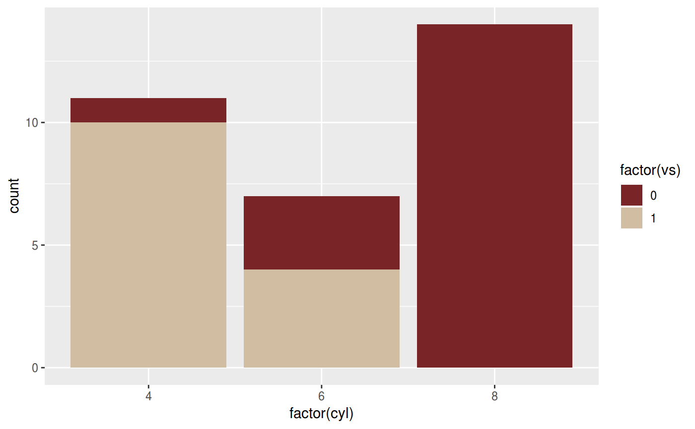
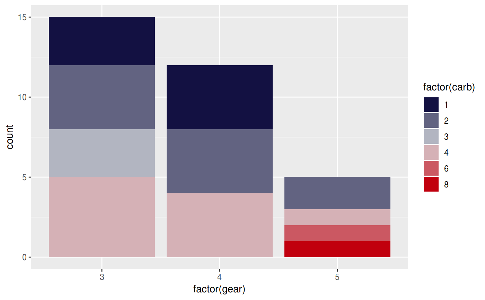

Uses the Game of Thrones color scale.
scale_color_got(..., alpha = 1, begin = 0, end = 1, direction = 1, discrete = FALSE, option = "targaryen") scale_colour_got(..., alpha = 1, begin = 0, end = 1, direction = 1, discrete = FALSE, option = "targaryen") scale_colour_got_d(..., alpha = 1, begin = 0, end = 1, direction = 1, option, aesthetics = "colour") scale_color_got_d(..., alpha = 1, begin = 0, end = 1, direction = 1, option, aesthetics = "colour") scale_fill_got(..., alpha = 1, begin = 0, end = 1, direction = 1, discrete = FALSE, option = "targaryen") scale_fill_got_d(..., alpha = 1, begin = 0, end = 1, direction = 1, option, aesthetics = "fill")
Arguments
| ... | parameters to |
|---|---|
| alpha | pass through parameter to |
| begin | The (corrected) hue in [0,1] at which the got colormap begins. |
| end | The (corrected) hue in [0,1] at which the got colormap ends. |
| direction | Sets the order of colors in the scale. If 1, the default, colors
are as output by |
| discrete | generate a discrete palette? (default: |
| option | A character string indicating the colourmap to use. |
| aesthetics | Character string or vector of character strings listing the name(s) of the aesthetic(s) that this scale works with. This can be useful, for example, to apply colour settings to the `colour` and `fill` aesthetics at the same time, via `aesthetics = c("colour", "fill")`. Parameter inherited from 'ggplot2'. |
Details
For discrete == FALSE (the default) all other arguments are as to
scale_fill_gradientn or scale_color_gradientn.
Otherwise the function will return a discrete_scale with the plot-computed
number of colors.
Examples
library(ggplot2) ggplot(mtcars, aes(factor(cyl), fill=factor(vs))) + geom_bar() + scale_fill_got(discrete = TRUE, option = "Daenerys")ggplot(mtcars, aes(factor(gear), fill=factor(carb))) + geom_bar() + scale_fill_got(discrete = TRUE, option = "Tully")ggplot(mtcars, aes(x = mpg, y = disp, colour = hp)) + geom_point(size = 2) + scale_colour_got(option = "Lannister")